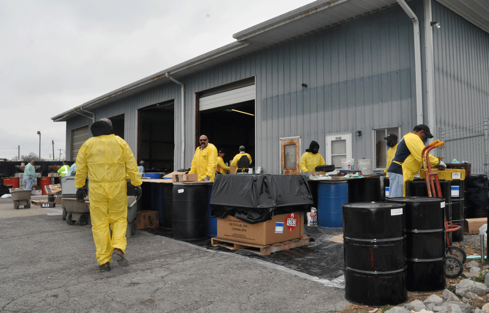
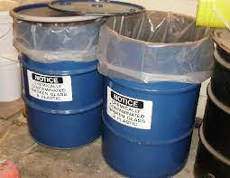
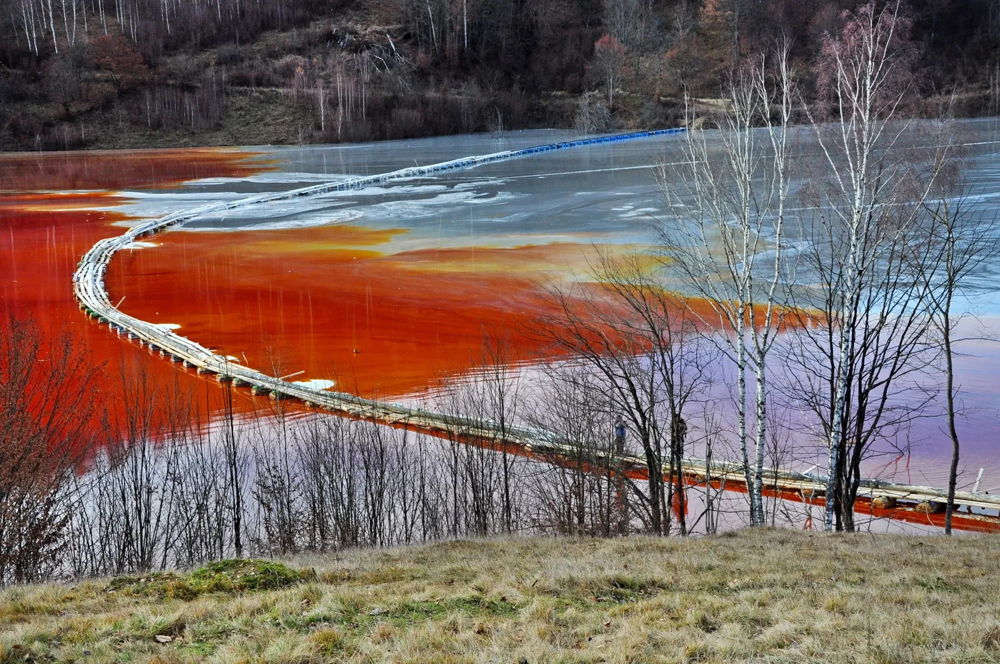

How is toxic waste collected and stored to prevent leaks or spills?
Toxic waste is a hazardous substance that can cause serious harm to humans, animals, and the environment if not handled and stored properly. The collection and storage of toxic waste involves a variety of safety measures to prevent leaks or spills, which can be disastrous for the environment and the health of living organisms.
One of the most important aspects of collecting and storing toxic waste is using appropriate storage containers. These containers are specially designed to withstand the corrosive and hazardous nature of the waste they hold. Common types of containers include drums, intermediate bulk containers (IBCs), and tanks made of materials such as steel, plastic, or fiberglass. The size and type of container used will depend on the specific type of waste being stored, as well as the quantity and duration of storage required.
Secondary containment systems are also critical for preventing leaks and spills of toxic waste. Secondary containment includes spill berms, containment pallets, or sumps that can hold any spilled waste and prevent it from reaching the environment. The type and size of secondary containment used will depend on the amount and type of toxic waste being stored, as well as the location and environmental conditions of the storage area.
Proper labeling and signage are also essential for the safe collection and storage of toxic waste. The labeling must include information on the contents of the container, the hazards associated with the waste, and any emergency procedures that should be followed in the event of a leak or spill. Additionally, clear and visible signage should be used to identify the storage area and any potential hazards associated with the waste.
The storage location of toxic waste must be carefully chosen and designed to meet specific safety requirements. The location should be secure and isolated from sensitive areas, such as water sources or populated areas. Hazardous waste storage buildings are typically used to store toxic waste and can provide additional protection from the environment. Outdoor storage areas may also be used if they are surrounded by fencing and other safety features.
Finally, handling procedures are crucial for preventing leaks or spills of toxic waste. These procedures include the use of proper personal protective equipment, such as gloves, goggles, and respirators, as well as following specific handling protocols and using equipment that is designed to handle hazardous materials safely.
Overall, collecting and storing toxic waste requires careful planning and implementation of safety measures to prevent leaks or spills that can cause significant harm to the environment and human health. By using appropriate storage containers, secondary containment systems, labeling and signage, storage locations, and handling procedures, it is possible to manage toxic waste safely and responsibly.